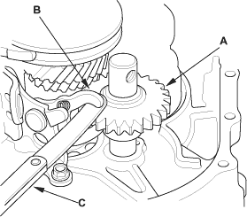
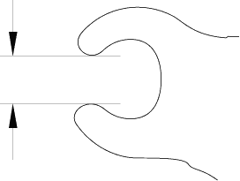
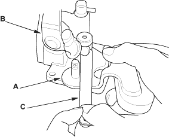
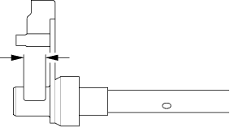

- Measure the clearance between the reverse idler gear (A) and the reverse shift fork (B) with a feeler gauge (C). If the clearance is more than the service limit, go to step 2.
Standard:
0.20 - 0.59 mm (0.007 - 0.024 in.)
Service Limit:
1.3 mm (0.051 in.)

- Measure the width of the reverse shift fork.
- If distance is not within the standard, replace the reverse shift fork with a new one.
- If distance is within the standard, replace the reverse gear with a new one.
Standard:
13.4 - 13.7 mm (0.527 - 0.539 in.)


- Measure the clearance between shift lever (A) and the select lever (B) with a feeler gauge (C). If the clearance is more than the service limit, go to step 2.
Standard:
0.05 - 0.25 mm (0.002 - 0.010 in.)
Service Limit:
0.50 mm (0.020 in.)

- Measure the groove of the shift lever.
- If distance is not within the standard, replace the shift lever with a new one.
- If distance is within the standard, replace the select lever with a new one.
Standard:
15.00 - 15.10 mm (0.591 - 0.594 in.)
